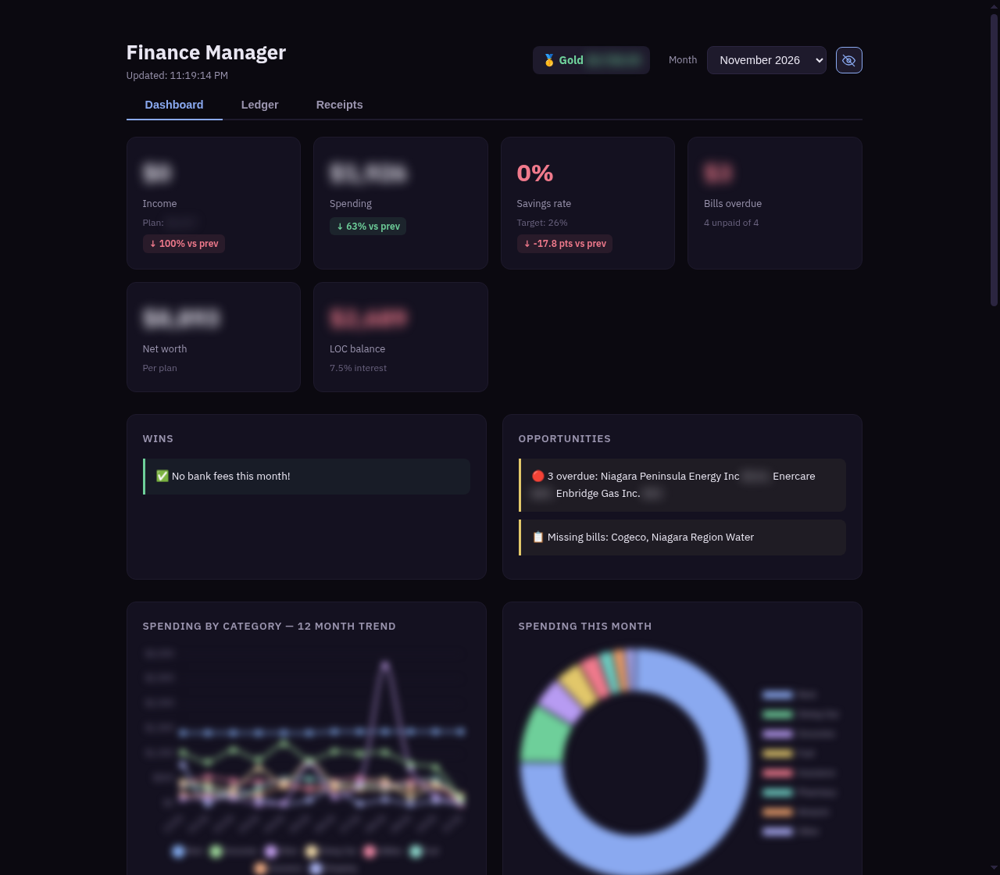

Automation · data pipelines · reconciliation
End-to-end personal finance automation
Statements, emailed receipts and brokerage exports arrive in different formats, at different times, from different sources. This ingests all of them into one store and reconciles them through a tiered matcher — with one rule that decides everything: a receipt is evidence, never a financial event.
Everything below is measured from the running system — 2,214 records spanning May 2025 to November 2026. Counts and structure only: the amounts, the vendors and the account numbers are the part that stays private, which is a constraint the design had to respect from the start rather than one added at the end.
The problem
Recording a transaction is easy. Knowing that this evidence belongs to that charge is the whole problem — and it is not a parsing problem, it is a judgement problem wearing a parsing problem's clothes.
Three things arrive independently and none of them agree. A receipt is emailed on the day of purchase and quotes a pre-tax figure. The card charge lands days later, includes the tax, and names a parent company rather than the shop. A brokerage export arrives at month end, in a different currency, with its own idea of what a date is. And in every set there is one payment that must never be allowed to settle two bills, because the fastest way to make a ledger wrong is to make it look tidy.
Reconciling that by hand is the kind of work that quietly never gets done.
How it fits together
Four sources, one store, and a matcher in the middle that is doing the actual thinking.
The matcher: six tiers, ordered by how much they assume
Each tier is a different theory of how two records can be the same thing. They run in order, and the order is the design: the cheap, safe theories first, so a confident match never gets made by a fuzzy rule that happened to fire first.
What it holds, measured
Two charts, both counts rather than amounts. The first is the volume of records the store has accumulated; the second is where they came from — which is really a chart about how many different formats one system had to learn.
What made it interesting
Not the parsing. Reconciliation is where the edge cases live, and every one of them is a case where the correct answer is less convenient than the plausible one:
- A receipt quoted before tax against a charge that includes it — matching on the pre-tax figure is right, matching on the post-tax figure is a coincidence.
- A foreign vendor on a domestic card, which reconciles only at that day's rate and therefore matches on some days and not others.
- One payment that must never settle two bills, no matter how well the numbers line up.
Building it changed how I think about automation generally. The interesting part is never the happy path; it is deciding what the system does when it cannot be sure — and the answer here is that it says so.
Outcome.
The dashboard
The pipeline's output still has to be readable by a person, so it ends in an interface. One self-contained HTML file — no build step, no framework, self-hosted fonts — reading the same SQLite store, installable to a phone home screen, and organised as three views: Dashboard, Ledger, Receipts.
The dashboard opens with a snapshot, and then two cards that are the actual point: Wins and Opportunities. Not more figures — the reading of them. Below that, four charts (spending by category across twelve months, this month, the savings-rate trend and its projection, the net-worth projection), then bills, a watchlist, a portfolio, and a drop zone for importing statements.

#0b0910, the same night value the rest of this site uses.The blur button, and why it is the part worth keeping
There is a button that hides every dollar figure, and it exists for a reason that is not obvious: so the dashboard can be shown to someone. Every money value is wrapped at runtime and blurred; the charts blur with it.
Two decisions inside that small feature are better than the feature itself:
- It tags money by walking the DOM, not by matching a list of CSS classes.
The class list had already missed twenty-eight elements — bare table cells carrying no
class, a portfolio total, a formatted
+$41 (+0.8%). A privacy control that misses things is worse than no privacy control, because it looks like it worked. - The blur is deliberately not persisted. Reload the page and the real values are back, so it can never be left switched on and mistaken for missing data.
That is a small piece of engineering, and it is the difference between a demo and something a person keeps using. Its existence tells you the author expected to want to show it to somebody — which is a design assumption you can build a feature on, and the reason this page can show you the interface at all.
Facts, in a form you can check
| Store | SQLite, single file, 11 tables |
|---|---|
| Records | 2,214, spanning May 2025 to November 2026 |
| Sources | Four formats: bank CSV, brokerage activity, brokerage holdings, email |
| Matching | Six ordered tiers, cheapest and safest first |
| Ingestion | Email receipts parsed directly; every source de-duplicated on the way in |
| Diagnostics | Anomaly detection over the reconciled result, run on a schedule |
| Interface | One self-contained HTML file, no build step; a dashboard, a ledger and a receipts view; installable to a phone home screen |
| Sharing | A blur control that hides every money figure on demand — runtime-tagged, and deliberately not persisted |
| Data policy | Counts and structure only. No amounts, no vendors, no account numbers — in the system's public description and in this page alike |